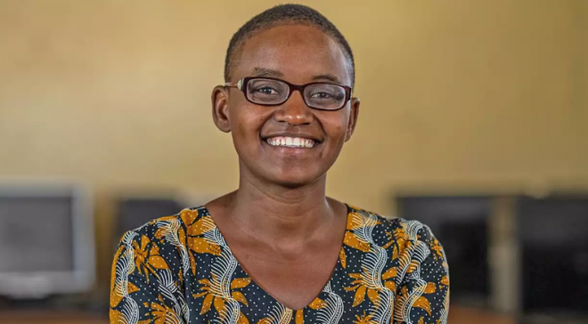
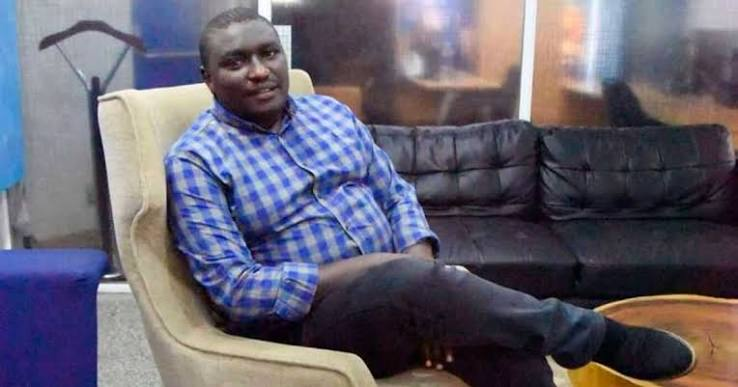

Nelly Cheboi
Co-founded TechLit Africa, which uses donated computers to teach digital skills in rural schools. She was named the 2022 CNN Hero of the Year.
Explore: Bringing digital skills to rural schools
Explore the talks, workshops and career sessions planned for the expo.
| Time | Session | Venue |
|---|---|---|
| 09:00–09:30 | Check-in and welcome | Reception |
| 09:30–10:15 | Opening talk: Careers in technology | Main Hall |
| 10:15–10:45 | Talk: Staying safe online | Main Hall |
| 10:45–11:00 | Tea break | Courtyard |
| 11:00–12:30 | Hands-on workshop: Build your first web page | Workshop Room |
| 12:30–13:30 | Lunch break | Courtyard |
| 13:30–14:30 | Career panel: Portfolios, internships and first jobs | Main Hall |
| 14:30–15:15 | Youth project demos and networking | Exhibition Area |
| 15:15–15:30 | Closing remarks and next steps | Main Hall |
Discover six people shaping Kenya’s technology sector, from bringing digital skills to rural schools to building software for local businesses and making AI more useful in African languages.

Co-founded TechLit Africa, which uses donated computers to teach digital skills in rural schools. She was named the 2022 CNN Hero of the Year.
Explore: Bringing digital skills to rural schools
Her work on research partnerships has supported efforts to include more African languages and local contexts in AI development.
Explore: Building AI that understands African languages
Founded EOSS TechnoPreneurs to help young innovators develop ideas, build startups and connect with industry partners.
Explore: Turning a STEM idea into a startup
Founded SMATRACOM and led work on cloud software that helps property owners and agents manage rentals.
Explore: Designing software for property managers

Founded Mobitech Technologies after identifying a need for bulk SMS services among businesses and institutions.
Explore: Building a business around a customer need
A former Permanent Secretary for Information and Communications who helped advance Kenya’s broadband and open data initiatives.
Explore: How digital infrastructure supports innovation